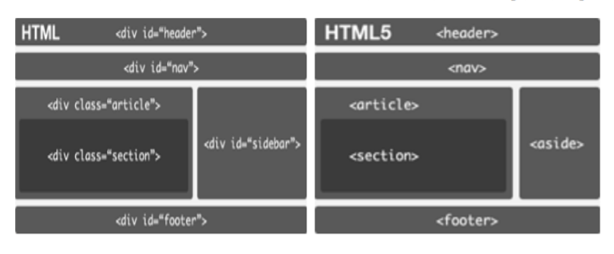
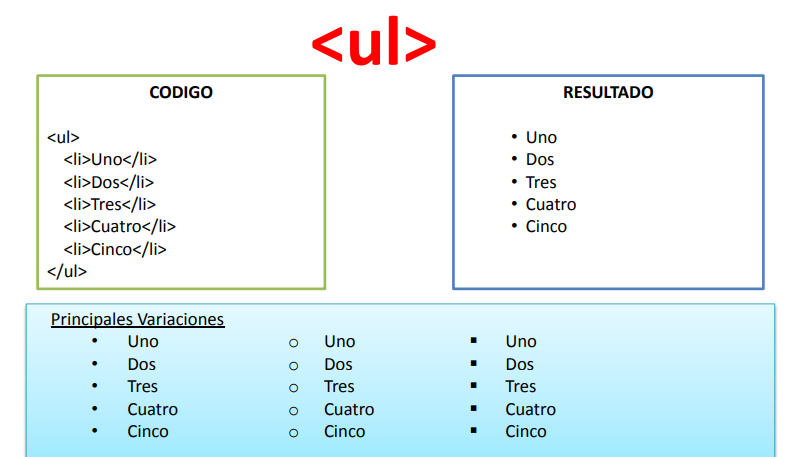
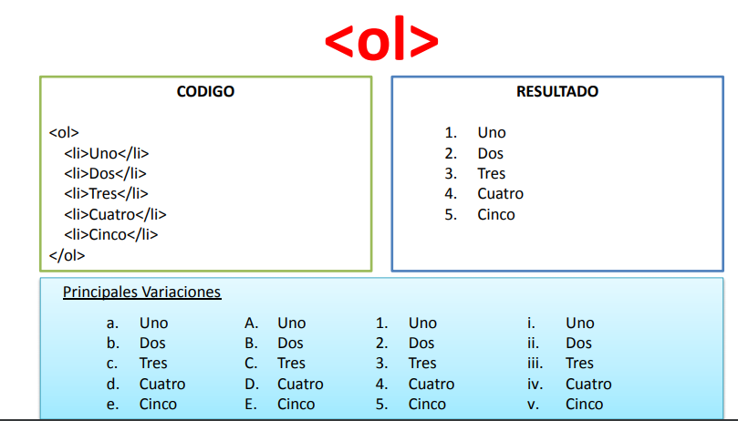

BIENVENDOS A TEMAS 1
En esta pagina encontrara el contenido con la descripción de Etiquetas semanticas y listas.

Etiquetas semanticas
HTML5 incorpora nuevas etiquetas para estructurar páginas web. Estos elementos,
denominados generalmente elementos semánticos sirven para dividir un documento
en partes lógicas, indicando el tipo de contenido que se incluye en cada parte,
representan por tanto secciones lógicas o componentes de una aplicación web o un
documento: #header, nav, article, Section, aside, footer.

Listas
Para el uso de las listas usamos las etiquetas ul ol dl.
Ul:Listas no ordenadas o no numeradas.
Cada objeto de la lista se define con "li"
OL: Listas Ordenadas.
Cada objeto de la lista se definie con "li"
DL:Lista de definiciones.

